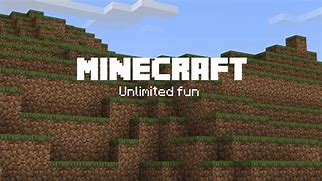
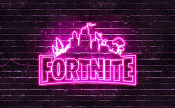

Jogos online mais jogados
PlayerUnknown's Battlegrounds
postado em 20 de setembro
PlayerUnknown's Battlegrounds (PUBG) é um jogo do gênero battle royale, uma mistura de sobrevivência e exploração de territórios. No PUBGS, os competidores são lançados de paraquedas numa ilha sem absolutamente nada. Tudo, incluindo as próprias roupas e armas, tem que ser conquistado dentro do território, enquanto o jogador tenta superar os obstáculos e se manter na ilha o maior tempo possível. Até 100 jogadores podem ser lançados na ilha de uma vez, mas há apenas um ganhador, ou uma equipe vencedora, caso esteja jogando em times.
Minecraft
postado em 20 de setembro A ideia básica desse jogo que conquista multidões é a construção por blocos. Os competidores precisam recolher recursos para que possam sobreviver, criando ambientes de maneira criativa. O jogo possui vários modos distintos, mas o principal é o "Survival". Nele, o objetivo é passar por diferentes fases, cada vez mais complicadas, até chegar à batalha final, com o Ender Dragon. A primeira versão de Minecraft foi lançada em 2009 e no Brasil o jogo lidera a lista com a maior quantidade de horas no Youtube Gaming.
Fortnite
postado em 20 de setembro Um dos jogos mais populares e celebrados em todo o mundo, Fortnite foi lançado em 2017 e atraiu 125 milhões de jogadores somente no seu primeiro ano de estreia. Hoje, existem duas modalidades do game, Fortnite: Save the World e Fortnite: Battle Royale. Nos dois modos de jogar, você deve coletar materiais como madeira, tijolo e metal para a construção das suas fortificações. Além disso, armas estão disponíveis para que você consiga finalizar uma missão ou ser o último jogador no mapa.
Counter-Strike: Global Offensive
postado em 20 de setembro
O que é bom nunca sai de moda, não é verdade? O super popular Counter- Strike, lançado
em 1999, é um bom exemplo disso. Disponível desde 2012 com a versão Global Offensive
(CS:GO), o jogo é um dos mais tradicionais no mundo dos games. Os jogadores competem
em equipes e se posicionam como terroristas (T) e contra terroristas (CT). Os jogadores T
devem implantar uma bomba no campo inimigo, enquanto os CT têm que desativá-la,
estruindo inimigos e protegendo as possíveis vítimas.
Há diversos campeonatos mundiais organizados para fãs do jogo, como é o caso dos
chamados Majors. Essas competições têm premiações de quase 4 milhões de reais e alguns
nomes brasileiros já fizeram história levando o prêmio para casa.